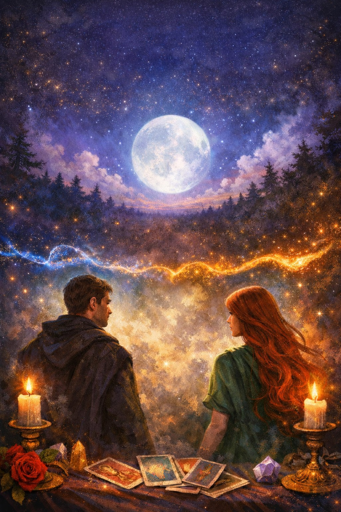
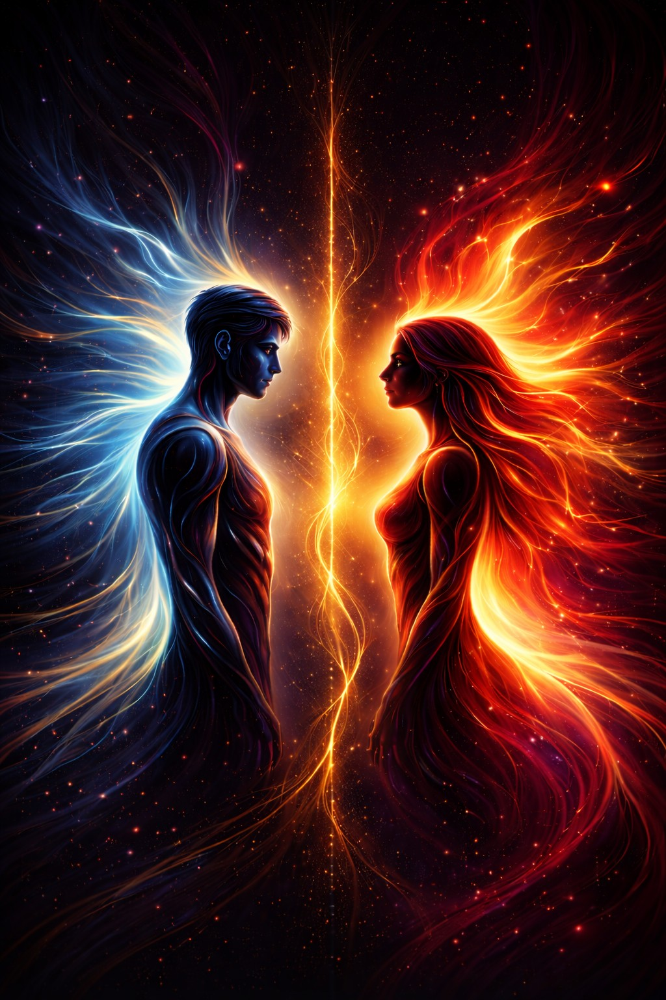
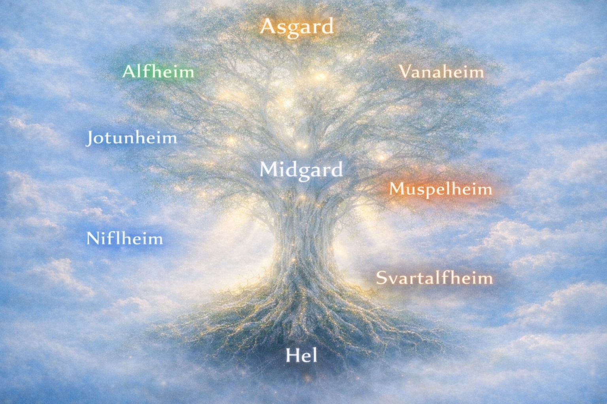
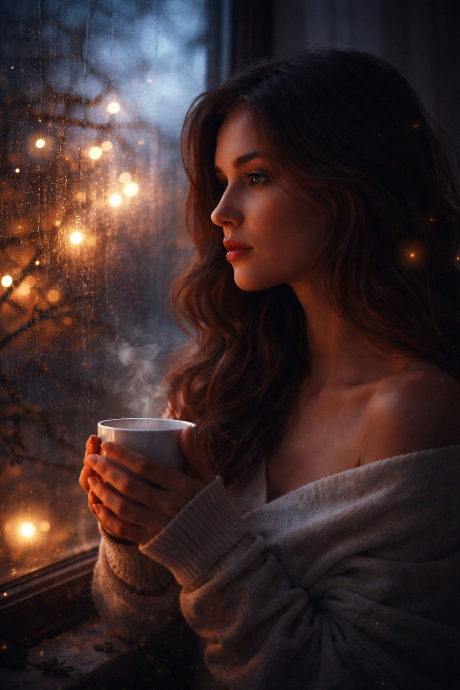

Събитийна линия
Проследява движението между двама души: настояща енергия, възможно развитие, реални действия и посоката на връзката.
Дневна руна, таро Да / Не и дълбоки рунически четения на едно място.
Рунически и таро прочити за любов, развитие, вътрешна яснота и движение на процесите.
Проследява движението между двама души: настояща енергия, възможно развитие, реални действия и посоката на връзката.
Сравнителен рунически прочит на две гледни точки, желания или вътрешни конфликти в конкретна ситуация.
Дълбока диагностика на различни нива: емоционално, ментално, енергийно и житейско направление.
Кратко насочване за деня с акцент върху основната енергия, урок и най-добрия подход.




Задай ясен въпрос и изтегли карта за кратък насочващ отговор.
Натисни бутона, за да изтеглиш карта и да получиш кратко тълкуване по въпроса си.
Натисни бутона и получи руна от Elder Futhark, за да усетиш посоката и енергията на деня.
Натисни „Изтегли руна“, за да получиш своя дневен символ и кратко послание.
Всичко е организирано така, че да получиш отговор без излишно усложнение и с достатъчно дълбочина.
Споделяш темата или конкретния въпрос, върху който искаш да се направи рунически прочит, както и нужните имена.
Отговорът е структуриран, ясен и съобразен с твоята конкретна ситуация.
Ще видиш самите руни, тяхната символика и как работят заедно в твоя казус.
Руническото четене не е просто отговор „да“ или „не“, а карта на енергии, препятствия и потенциални посоки. Тук фокусът е върху смислен анализ, който да ти помогне да видиш по-ясно ситуацията си.
Пиши ми на лично съобщение или email, ако искаш лично четене, диагностика или насока по конкретен въпрос.
Пиши ми на лично съобщение или email
yeraeiv@yahoo.com